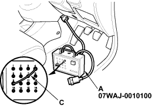
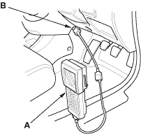
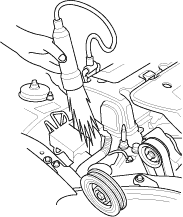
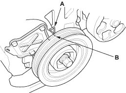

Special Tools Required
DLC pin box 07WAJ-0010100
- Start the engine. Hold the engine at 3,000 rpm (min-1) with no load (in Neutral) until the radiator fan comes on, then let it idle.
- Check the idle speed (see page 11-110).
- Short the SCS terminal to ground by using the DLC pin box: Connect the DLC pin box (A) on the data link connector (16P) (B), then connect the No. 4 and No. 9 terminals on the DLC pin box with a jumper wire (C), and push the switch.

- Short the SCS terminal to ground by using the Honda PGM tester: Connect the Honda PGM tester (A) on the data link connector (16P) (B).

- Connect the timing light to the service loop.

- Point the light toward the pointers (A) on the timing belt cover. Check the ignition timing under no load conditions: headlights, blower fan, rear window defogger, and air conditioner are not operating.
Ignition Timing:
8° + 2° BTDC (RED mark (B)) during idling in neutral

- If the ignition timing differs from the specification, replace the ECM (see page 11-4).
- Disconnect the special tool/Honda PGM Tester and the timing light.